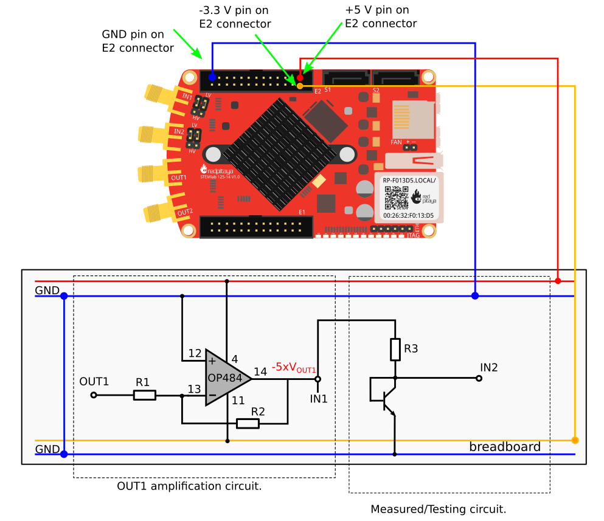
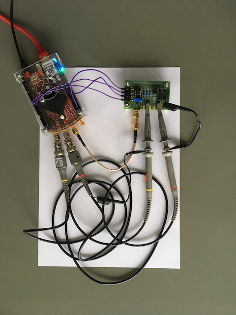
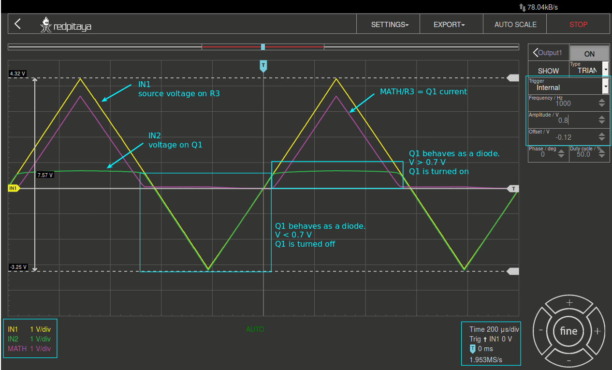
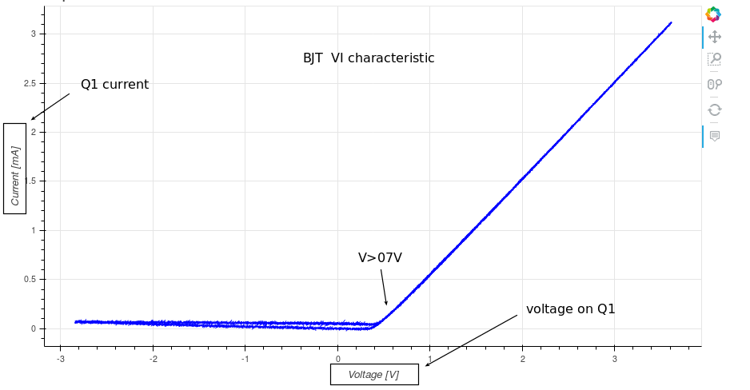

Der BJT als Diode#
Zielsetzung#
Der Zweck dieses Versuchs ist es, die Strom- und Spannungseigenschaften eines als Diode geschalteten Bipolartransistors (engl. Bipolar Junction Transistor, BJT) zu untersuchen.
Tip
Die für die Versorgungsspannungen von +5 V, -3,3 V und +3,3 V verwendeten Steckerstifte des STEMLab’s sind in der Dokumentation aufgeführt.
Die STEMlab-Ausgänge können Spannungssignale mit einem maximalen Ausgangsbereich von \(\pm\) 1 V (2 Vpp) erzeugen. Für diesen Versuch sind höhere Signalamplituden erforderlich. Aus diesem Grund wird ein Operationsverstärker (Opamp) als invertierender Verstärker eingesetzt, um die Signale der Ausgänge OUT1 und OUT2 für einen Spannungshub von +4,7 V bis -3,2 V zu verstärken. Der Opamp wird vom STEMlab aus mit +5 V und -3,3 V versorgt. Die Verstärkung des Opamps wird auf \(\approx\) 5 gesetzt, wobei \(R_i\) = 2,2 k \(\Omega\) und \(R_f\) = 10 k \(\Omega\).
Materialien#
Red Pitaya STEMlab
OP484
1 k \(\Omega\) Widerstand
10 k \(\Omega\) Widerstand
2,2 k \(\Omega\) Widerstand
Kleinsignal npn-Transistor (2N3904)
Kleinsignal pnp-Transistor (2N3906)
Platine
Labornetzteil
Ein npn-Transistor, der wie in Figure gezeigt angeschlossen ist, verhält sich wie eine Diode. Dies kann durch die Verwendung der Oszilloskop- und Signalgenerator-App gezeigt werden.

Tip
Beachten Sie, dass die in Figure (links) gezeigte Verstärkerschaltung nicht das Hauptthema dieses Versuchs ist. Diese Schaltung wird nur hinzugefügt, um das Signal OUT1 zu verstärken; von hier an können Sie den Punkt -5 \(\times V_{OUT1}\) als Bezugspotenzial betrachten.
Verfahren#
Im Labor in Raum E 507 ist an jedem Messplatz eine Platine, wie in Figure gezeigt, an ein STEMlab angeschlossen, wobei \(R_1\) = 2,2 k \(\Omega\), \(R_2\) = 10 k \(\Omega\) und \(R_3\) = 1 k \(\Omega\).

Warning
Bevor Sie eigene Schaltungen, entweder auf dem Steckbrett oder einer eigenen Platine, an die STEMlab-Pins -3,3V und +3,3V anschließen, überprüfen Sie sorgfältig die Polarität Ihrer Schaltung. Die Spannungsversorgungsstifte -3,3V und +3,3V haben keine Schutzschaltung und können im Falle eines Kurzschlusses beschädigt werden.
Starten Sie die Oszilloskop- und Signalgenerator-App
Stellen Sie im Menü OUT1-Einstellungen den Amplitudenwert auf 0,8 V, den DC-Offset auf -0,12 V und die Frequenz auf 1 kHz ein, um die Eingangsspannung anzulegen. Wählen Sie im Wellenform-Menü TRIANGLE, deaktivieren Sie SHOW und wählen Sie ENABLE.
Stellen Sie sicher, dass IN1, IN2 und MATH V/div auf der linken unteren Seite des Bildschirms auf 1 V/div eingestellt sind. Sie können V/div einstellen, indem Sie den gewünschten Kanal auswählen und die vertikalen +/- Button rechts unten verwenden.
Setzen Sie den t/div Wert auf 200 us/div. Sie können t/div mit den horizontalen +/- Button einstellen.
Stellen Sie unter MATH-Kanaleinstellungen folgendes ein: IN1-IN2 und wählen Sie ENABLE.
Stellen Sie unter den Menüeinstellungen IN1 und IN2 den Messtaster auf x10 und den vertikalen Offset auf 0.

Aus Figure ist ersichtlich, dass der npn-Transistor in der in Figure gezeigten Konfiguration sich wie eine Diode verhält. Vergleichen Sie die Ergebnisse mit den Diodenmessungen aus dem Diodenversuch.
IV-Kurvenmessungen#
Da sich ein Bipolartransistor wie eine Diode verhalten kann (vgl. Konfiguration in Figure), können sie die IV-Charakteristik mit den gleichen Methoden wie im Diodenexperiment ermitteln, also mit der Oszilloskop-App im Web-Browser, mit einem SCPI-Skript und mit eine Jupyter Notebook auf dem STEMlab.

Wenn Sie erfolgreich ein neues Jupyter-Notebook erstellt haben, kopieren Sie den untenstehenden Code in eine Zelle und führen diese dann aus. Der untenstehende Code erzeugt das gleiche Signal wie in Figure, aber er zeichnet sie in einam XY-Diagramm auf, wobei die x-Achse die Diodenspannung \(IN_2\) und die y-Achse den Diodenstrom \(I_D = I_C = (IN_1 - IN_2) / R_3\) darstellt.
# Import libraries
from redpitaya.overlay.mercury import mercury as overlay
from bokeh.io import push_notebook, show, output_notebook
from bokeh.models import HoverTool, Range1d, LinearAxis, LabelSet, Label
from bokeh.plotting import figure, output_file, show
from bokeh.resources import INLINE
output_notebook(resources=INLINE)
import numpy as np
# Initialize fpga modules
fpga = overlay()
gen0 = fpga.gen(0)
osc = [fpga.osc(ch, 1.0) for ch in range(fpga._MNO)]
# Configure OUT1 generator channel
gen0.amplitude = 0.8
gen0.offset = -0.12
gen0.waveform = gen0.sawtooth(0.5)
gen0.frequency = 2000
gen0.start()
gen0.enable = True
gen0.trigger()
# R1 resistor value
R1 = 1000
# Configure IN1 and IN2 oscilloscope input channels
for ch in osc:
ch.filter_bypass = True
# data rate decimation
ch.decimation = 10
# trigger timing [sample periods]
N = ch.buffer_size
ch.trigger_pre = 0
ch.trigger_post = N
# osc0 is controlling both channels
ch.sync_src = fpga.sync_src["osc0"]
ch.trig_src = fpga.trig_src["osc0"]
# trigger level [V], edge ['neg', 'pos'] and holdoff time [sample periods]
ch.level = 0.01
ch.edg = 'pos'
ch.holdoff = 0
# Initialize diode current and voltage
V = I = np.zeros(N)
# Plotting
hover = HoverTool(mode='vline', tooltips=[("V", "@x"), ("I", "@y")])
tools = "wheel_zoom, box_zoom, reset,pan"
p = figure(plot_height=500,
plot_width=900,
title="XY plot of transistor VI characteristic",
toolbar_location="right",
tools=(tools, hover))
p.xaxis.axis_label = 'Voltage [V]'
p.yaxis.axis_label = 'Current [mA]'
r = p.line(V, I, line_width=1, line_alpha=0.7, color="blue")
# get and explicit handle to update the next show cell
target = show(p, notebook_handle=True)
Erstellen Sie eine neue Zelle (Einfügen -> Zelle darunter) und kopieren Sie den Code von unten hinein.
# Measuring I, V and re-plotting
while True:
# reset and start
osc[0].reset()
osc[0].start()
# wait for data
while (osc[0].status_run()):
pass
V0 = osc[0].data(N-100)*10 # IN1 signal
V1 = osc[1].data(N-100)*10 # IN2 signal
I = ((V0-V1)/R1)*1E3 # 1E3 convert to mA
r.data_source.data['x'] = V0
r.data_source.data['y'] = I
push_notebook(handle=target)
Führen Sie Zelle 1 und Zelle 2 aus. Zelle 2 ist eine Hauptschleife für die Erfassung und Neuaufnahme. Wenn Sie die Erfassung stoppen, führen Sie einfach nur Zelle 2 aus, um die Messungen erneut zu starten.
Nach dem Ausführen des obigen Codes sollten Sie die IV-Charakteristik, wie in Figure gezeigt, erhalten.

In Figure ist die in einer Diodenkonfiguration gemessene IV-Charakteristik eines BJT dargestellt.
Vergleichen sie diese Ergebnisse mit der IV-Charakteristik der pn-Diode. Es sollte eine Hysterese sichtbar sein. Überlegen sie, warum Bipolartransistoren als Dioden verwendet werden können.